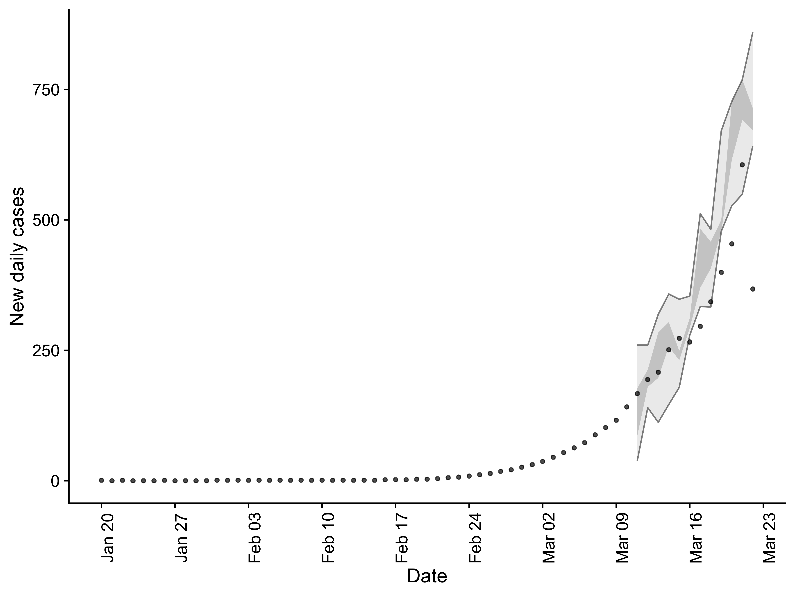

Getting started
introduction.RmdIntroduction
This vignette briefly outlines the functionality of EpiSoon. To get started load the required packages.
- Load the package (
bstsfor models,ggplot2for plotting, andcowplotfor theming)
library(EpiSoon) library(bsts) #> Warning: package 'BoomSpikeSlab' was built under R version 3.6.2 #> Warning: package 'Boom' was built under R version 3.6.2 #> Warning: package 'MASS' was built under R version 3.6.2 library(fable) #> Warning: package 'fable' was built under R version 3.6.2 library(cowplot) library(dplyr)
Forecast Rts, score and plot
- We use an example dataframe built into the package but this could be replaced with your own data.
EpiSoon::example_obs_rts #> rt date #> 1 2.490547 2020-03-01 #> 2 2.442588 2020-03-02 #> 3 2.402473 2020-03-03 #> 4 2.335572 2020-03-04 #> 5 2.266551 2020-03-05 #> 6 2.192293 2020-03-06 #> 7 2.146429 2020-03-07 #> 8 2.104371 2020-03-08 #> 9 2.059281 2020-03-09 #> 10 2.027134 2020-03-10 #> 11 2.014678 2020-03-11 #> 12 1.998946 2020-03-12 #> 13 1.968350 2020-03-13 #> 14 1.947376 2020-03-14 #> 15 1.906984 2020-03-15 #> 16 1.812842 2020-03-16 #> 17 1.718532 2020-03-17 #> 18 1.665646 2020-03-18 #> 19 1.639927 2020-03-19 #> 20 1.633795 2020-03-20 #> 21 1.682025 2020-03-21 #> 22 1.561653 2020-03-22
- Fit a
bstsmodel and produce a Rt forecast. Any appropriately wrapped model can be used (seebsts_modelandfable_modelfor an examples).
rt_forecast <- forecast_rt(EpiSoon::example_obs_rts[1:10, ], model = function(...){EpiSoon::bsts_model(model = function(ss, y){bsts::AddAutoAr(ss, y = y, lags = 10)}, ...)}, horizon = 21, samples = 10) rt_forecast #> # A tibble: 210 x 4 #> sample date rt horizon #> <int> <date> <dbl> <int> #> 1 1 2020-03-11 1.86 1 #> 2 2 2020-03-11 1.87 1 #> 3 3 2020-03-11 1.97 1 #> 4 4 2020-03-11 2.04 1 #> 5 5 2020-03-11 2.01 1 #> 6 6 2020-03-11 1.85 1 #> 7 7 2020-03-11 2.04 1 #> 8 8 2020-03-11 1.74 1 #> 9 9 2020-03-11 1.92 1 #> 10 10 2020-03-11 2.01 1 #> # … with 200 more rows
- Score the forecast
rt_scores <- score_forecast(rt_forecast, EpiSoon::example_obs_rts) rt_scores #> # A tibble: 12 x 11 #> date horizon dss crps logs bias sharpness calibration median #> <date> <int> <dbl> <dbl> <dbl> <dbl> <dbl> <dbl> <dbl> #> 1 2020-03-11 1 -3.92 0.0417 -1.15 -0.6 0.115 0.0000500 0.146 #> 2 2020-03-12 2 -3.11 0.0887 -0.432 -0.6 0.158 0.0000500 0.280 #> 3 2020-03-13 3 -1.65 0.106 -0.500 -1 0.135 0.0000500 0.325 #> 4 2020-03-14 4 -0.984 0.134 -0.189 -1 0.135 0.0000500 0.401 #> 5 2020-03-15 5 -0.628 0.162 0.0739 -1 0.151 0.0000500 0.405 #> 6 2020-03-16 6 -1.19 0.131 -0.185 -1 0.120 0.0000500 0.378 #> 7 2020-03-17 7 -2.06 0.0978 -0.561 -1 0.100 0.0000500 0.321 #> 8 2020-03-18 8 -2.41 0.0886 -0.617 -1 0.0791 0.0000500 0.239 #> 9 2020-03-19 9 -2.78 0.0960 -0.123 -0.8 0.0912 0.0000500 0.269 #> 10 2020-03-20 10 -1.99 0.122 0.132 -0.8 0.0765 0.0000500 0.367 #> 11 2020-03-21 11 -0.794 0.155 0.0279 -1 0.128 0.0000500 0.447 #> 12 2020-03-22 12 -2.45 0.0912 -0.601 -1 0.174 0.0000500 0.275 #> # … with 2 more variables: iqr <dbl>, ci <dbl>
- Summarise the forecast scores
summarise_scores(rt_scores) #> Warning: attributes are not identical across measure variables; #> they will be dropped #> # A tibble: 9 x 8 #> score bottom lower median mean upper top sd #> * <chr> <dbl> <dbl> <dbl> <dbl> <dbl> <dbl> <dbl> #> 1 bias -1 -1 -1.00e+0 -9.00e-1 -8.00e-1 -6.00e-1 0.160 #> 2 calibrat… 0.0000500 0.0000500 5.00e-5 5.00e-5 5.00e-5 5.00e-5 0 #> 3 ci 0.277 0.389 9.41e-1 1.29e+0 1.87e+0 3.42e+0 1.06 #> 4 crps 0.0546 0.0906 1.02e-1 1.10e-1 1.31e-1 1.60e-1 0.0333 #> 5 dss -3.70 -2.53 -2.03e+0 -2.00e+0 -1.14e+0 -6.74e-1 1.00 #> 6 iqr 0.234 0.446 4.79e-1 5.11e-1 6.02e-1 7.59e-1 0.157 #> 7 logs -1.00 -0.571 -3.10e-1 -3.43e-1 -8.56e-2 1.16e-1 0.369 #> 8 median 0.172 0.273 3.23e-1 3.21e-1 3.84e-1 4.35e-1 0.0846 #> 9 sharpness 0.0772 0.0980 1.24e-1 1.22e-1 1.39e-1 1.70e-1 0.0312
- Summarise the forecast
summarised_rt_forecast <- summarise_forecast(rt_forecast) summarised_rt_forecast #> # A tibble: 21 x 9 #> date horizon median mean sd bottom lower upper top #> <date> <int> <dbl> <dbl> <dbl> <dbl> <dbl> <dbl> <dbl> #> 1 2020-03-11 1 1.94 1.93 0.0981 1.74 1.92 2.04 2.04 #> 2 2020-03-12 2 1.86 1.87 0.140 1.71 1.71 1.89 2.13 #> 3 2020-03-13 3 1.81 1.81 0.0900 1.70 1.70 1.82 1.93 #> 4 2020-03-14 4 1.75 1.76 0.106 1.63 1.63 1.77 1.92 #> 5 2020-03-15 5 1.70 1.68 0.129 1.48 1.68 1.82 1.82 #> 6 2020-03-16 6 1.62 1.62 0.109 1.46 1.57 1.72 1.77 #> 7 2020-03-17 7 1.56 1.57 0.0942 1.42 1.51 1.63 1.71 #> 8 2020-03-18 8 1.55 1.53 0.0906 1.36 1.54 1.65 1.65 #> 9 2020-03-19 9 1.51 1.51 0.0981 1.39 1.44 1.56 1.72 #> 10 2020-03-20 10 1.45 1.46 0.119 1.26 1.41 1.51 1.69 #> # … with 11 more rows
- Plot the forecast against observed data
plot_forecast(summarised_rt_forecast, EpiSoon::example_obs_rts)

Forecast cases, score and plot
- Forecasting cases requires the observed cases on which the observed Rt estimates were based
EpiSoon::example_obs_cases #> # A tibble: 63 x 2 #> cases date #> <dbl> <date> #> 1 1 2020-01-20 #> 2 0 2020-01-21 #> 3 1 2020-01-22 #> 4 0 2020-01-23 #> 5 0 2020-01-24 #> 6 0 2020-01-25 #> 7 1 2020-01-26 #> 8 0 2020-01-27 #> 9 0 2020-01-28 #> 10 0 2020-01-29 #> # … with 53 more rows
- It also requires an assumption to be made about the serial interval (defined using probability distribution).
EpiSoon::example_serial_interval #> 1 2 3 4 5 6 7 8 9 10 11 12 14 #> 0.00 0.03 0.25 0.17 0.09 0.15 0.13 0.05 0.05 0.03 0.02 0.01 0.01 0.01
- Forecast cases (using the case data on which the observed Rt estimates were based)
case_forecast <- forecast_cases(EpiSoon::example_obs_cases, rt_forecast, serial_interval = EpiSoon::example_serial_interval) case_forecast #> # A tibble: 210 x 4 #> sample date cases horizon #> * <dbl> <date> <int> <int> #> 1 1 2020-03-11 145 1 #> 2 1 2020-03-12 161 2 #> 3 1 2020-03-13 177 3 #> 4 1 2020-03-14 210 4 #> 5 1 2020-03-15 207 5 #> 6 1 2020-03-16 226 6 #> 7 1 2020-03-17 265 7 #> 8 1 2020-03-18 282 8 #> 9 1 2020-03-19 292 9 #> 10 1 2020-03-20 329 10 #> # … with 200 more rows
- Score the cases forecast
case_scores <- score_case_forecast(case_forecast, EpiSoon::example_obs_cases) case_scores #> # A tibble: 12 x 11 #> date horizon dss crps logs bias sharpness calibration median #> <date> <int> <dbl> <dbl> <dbl> <dbl> <dbl> <dbl> <dbl> #> 1 2020-03-11 1 5.86 5.2 3.93 -0.400 20.8 0.414 13 #> 2 2020-03-12 2 6.18 8.04 4.21 -0.8 7.41 0.414 20 #> 3 2020-03-13 3 6.13 4.25 3.81 0.200 14.8 0.414 6 #> 4 2020-03-14 4 6.83 10.0 4.63 -0.200 28.9 0.414 33 #> 5 2020-03-15 5 7.13 9.69 4.69 -0.1 34.1 0.414 22 #> 6 2020-03-16 6 7.65 14.6 4.97 0.4 38.5 0.414 39 #> 7 2020-03-17 7 7.21 10.6 4.62 0.200 35.6 0.414 31 #> 8 2020-03-18 8 7.33 10.1 4.80 0.200 37.1 0.414 7 #> 9 2020-03-19 9 8.18 21.2 5.21 -0.6 40.0 0.414 77 #> 10 2020-03-20 10 9.30 40.4 5.78 -0.6 87.5 0.414 133 #> 11 2020-03-21 11 11.9 113. 7.27 -0.8 91.9 0.414 345 #> 12 2020-03-22 12 10.3 60.4 6.09 0.6 138. 0.414 201 #> # … with 2 more variables: iqr <dbl>, ci <dbl>
- Summarise the cases scores
summarise_scores(case_scores) #> Warning: attributes are not identical across measure variables; #> they will be dropped #> # A tibble: 9 x 8 #> score bottom lower median mean upper top sd #> * <chr> <dbl> <dbl> <dbl> <dbl> <dbl> <dbl> <dbl> #> 1 bias -0.8 -0.6 -0.15 -0.158 0.200 0.545 0.481 #> 2 calibration 0.414 0.414 0.414 0.414 0.414 0.414 0 #> 3 ci 41.4 84.0 111. 145. 184. 344. 100. #> 4 crps 4.51 9.28 10.3 25.6 26.0 98.8 32.2 #> 5 dss 5.93 6.67 7.27 7.83 8.46 11.5 1.82 #> 6 iqr 19.0 39.6 47.9 111 98.6 449. 147. #> 7 logs 3.84 4.51 4.75 5.00 5.35 6.95 0.982 #> 8 median 6.28 18.2 32 77.2 91 305. 103. #> 9 sharpness 9.45 26.9 36.3 47.9 51.9 125. 38.2
- Summarise the cases forecast
summarised_case_forecast <- summarise_case_forecast(case_forecast) summarised_case_forecast #> # A tibble: 21 x 9 #> date horizon median mean sd bottom lower upper top #> <date> <int> <dbl> <dbl> <dbl> <dbl> <dbl> <dbl> <dbl> #> 1 2020-03-11 1 160. 158. 17.1 124 145 165 180 #> 2 2020-03-12 2 184 181. 12.5 160 175 185 200 #> 3 2020-03-13 3 211 211. 22.3 177 202 222 258 #> 4 2020-03-14 4 234. 240. 29.6 200 219 255 295 #> 5 2020-03-15 5 262 260. 34.4 207 234 280 313 #> 6 2020-03-16 6 286. 286. 42.4 222 265 316 347 #> 7 2020-03-17 7 312. 314. 33.0 265 283 319 370 #> 8 2020-03-18 8 346. 351. 40.3 282 319 369 419 #> 9 2020-03-19 9 361 372. 54.8 292 333 387 486 #> 10 2020-03-20 10 388. 393. 78.7 295 295 401 533 #> # … with 11 more rows
- Plot the forecast against observed case data
plot_forecast(summarised_case_forecast, EpiSoon::example_obs_cases)

Use iterative fitting to explore a forecast
- To explore the quality of a models forecast it can help to iteratively forecast from each available data point. This is supported in
EpiSoonusing the following:
it_rt_forecast <- iterative_rt_forecast(EpiSoon::example_obs_rts, model = function(...){ EpiSoon::bsts_model(model = function(ss, y){bsts::AddAutoAr(ss, y = y, lags = 10)}, ...) }, horizon = 7, samples = 10, min_points = 4) it_rt_forecast #> # A tibble: 1,260 x 5 #> forecast_date sample date rt horizon #> * <chr> <int> <date> <dbl> <int> #> 1 2020-03-05 1 2020-03-06 2.23 1 #> 2 2020-03-05 2 2020-03-06 2.13 1 #> 3 2020-03-05 3 2020-03-06 2.24 1 #> 4 2020-03-05 4 2020-03-06 2.29 1 #> 5 2020-03-05 5 2020-03-06 2.26 1 #> 6 2020-03-05 6 2020-03-06 2.34 1 #> 7 2020-03-05 7 2020-03-06 2.18 1 #> 8 2020-03-05 8 2020-03-06 2.07 1 #> 9 2020-03-05 9 2020-03-06 2.19 1 #> 10 2020-03-05 10 2020-03-06 2.24 1 #> # … with 1,250 more rows
- We can then iteratively forecast cases using the following:
it_cases_forecast <- iterative_case_forecast(it_fit_samples = it_rt_forecast, cases = EpiSoon::example_obs_cases, serial_interval = EpiSoon::example_serial_interval) it_cases_forecast #> # A tibble: 1,260 x 5 #> forecast_date sample date cases horizon #> * <chr> <dbl> <date> <int> <int> #> 1 2020-03-05 1 2020-03-06 82 1 #> 2 2020-03-05 1 2020-03-07 85 2 #> 3 2020-03-05 1 2020-03-08 109 3 #> 4 2020-03-05 1 2020-03-09 117 4 #> 5 2020-03-05 1 2020-03-10 144 5 #> 6 2020-03-05 1 2020-03-11 174 6 #> 7 2020-03-05 1 2020-03-12 163 7 #> 8 2020-03-05 2 2020-03-06 78 1 #> 9 2020-03-05 2 2020-03-07 96 2 #> 10 2020-03-05 2 2020-03-08 116 3 #> # … with 1,250 more rows
- All functionality shown above is also supported for iterative forecasting.
Evaluate a model
In real world use we are likely to want to evaluate a model by iteratively forecasting Rts and cases, summarising these forecasts, scoring them and then returning them in a sensible format. These steps are all contained in the evaluate_model function.
model_eval <- evaluate_model(EpiSoon::example_obs_rts, EpiSoon::example_obs_cases, model = function(...){ EpiSoon::bsts_model(model = function(ss, y){bsts::AddAutoAr(ss, y = y, lags = 10)}, ...) }, horizon = 21, samples = 10, serial_interval = EpiSoon::example_serial_interval) model_eval #> $forecast_rts #> # A tibble: 399 x 10 #> forecast_date date horizon median mean sd bottom lower upper top #> * <chr> <date> <int> <dbl> <dbl> <dbl> <dbl> <dbl> <dbl> <dbl> #> 1 2020-03-04 2020-03-05 1 2.25 2.23 0.0703 2.12 2.19 2.28 2.33 #> 2 2020-03-04 2020-03-06 2 2.18 2.09 0.234 1.56 2.13 2.28 2.28 #> 3 2020-03-04 2020-03-07 3 2.13 1.96 0.380 1.03 2.09 2.24 2.24 #> 4 2020-03-04 2020-03-08 4 1.96 1.76 0.542 0.415 1.83 2.11 2.17 #> 5 2020-03-04 2020-03-09 5 1.91 1.60 0.664 0 1.84 2.14 2.14 #> 6 2020-03-04 2020-03-10 6 1.89 1.50 0.723 0 1.83 2.09 2.09 #> 7 2020-03-04 2020-03-11 7 1.81 1.39 0.780 0 1.75 2.06 2.06 #> 8 2020-03-04 2020-03-12 8 1.72 1.31 0.833 0 1.66 2.07 2.07 #> 9 2020-03-04 2020-03-13 9 1.68 1.25 0.887 0 1.63 2.08 2.08 #> 10 2020-03-04 2020-03-14 10 1.55 1.19 0.878 0 1.48 2.07 2.07 #> # … with 389 more rows #> #> $rt_scores #> # A tibble: 171 x 12 #> forecast_date date horizon dss crps logs bias sharpness #> <chr> <date> <int> <dbl> <dbl> <dbl> <dbl> <dbl> #> 1 2020-03-04 2020-03-05 1 -5.18 0.0201 -1.55 -0.200 0.0737 #> 2 2020-03-04 2020-03-06 2 -2.82 0.0501 -0.833 0 0.129 #> 3 2020-03-04 2020-03-07 3 -1.77 0.0659 -0.464 0 0.148 #> 4 2020-03-04 2020-03-08 4 -0.873 0.114 -0.116 -0.400 0.228 #> 5 2020-03-04 2020-03-09 5 -0.386 0.166 0.260 -0.8 0.278 #> 6 2020-03-04 2020-03-10 6 -0.169 0.192 0.591 -0.400 0.269 #> 7 2020-03-04 2020-03-11 7 0.108 0.252 0.758 -0.400 0.376 #> 8 2020-03-04 2020-03-12 8 0.292 0.303 0.852 -0.400 0.518 #> 9 2020-03-04 2020-03-13 9 0.382 0.318 0.907 -0.400 0.576 #> 10 2020-03-04 2020-03-14 10 0.472 0.349 0.938 -0.6 0.730 #> # … with 161 more rows, and 4 more variables: calibration <dbl>, median <dbl>, #> # iqr <dbl>, ci <dbl> #> #> $forecast_cases #> # A tibble: 171 x 10 #> forecast_date date horizon median mean sd bottom lower upper top #> * <chr> <date> <int> <dbl> <dbl> <dbl> <dbl> <dbl> <dbl> <dbl> #> 1 2020-03-04 2020-03-05 1 70 69.8 10.5 52 67 81 84 #> 2 2020-03-04 2020-03-06 2 76.5 74.5 11.2 56 71 85 89 #> 3 2020-03-04 2020-03-07 3 95.5 93 22.8 55 94 122 122 #> 4 2020-03-04 2020-03-08 4 103 96.2 36.0 23 87 119 139 #> 5 2020-03-04 2020-03-09 5 120 106. 51.2 0 117 157 157 #> 6 2020-03-04 2020-03-10 6 136. 117. 68.5 0 95 178 205 #> 7 2020-03-04 2020-03-11 7 151 127. 84.2 0 128 222 222 #> 8 2020-03-04 2020-03-12 8 182 146. 105. 0 154 268 268 #> 9 2020-03-04 2020-03-13 9 210 162 128. 0 172 309 309 #> 10 2020-03-04 2020-03-14 10 196 178. 155. 0 148 370 370 #> # … with 161 more rows #> #> $case_scores #> # A tibble: 171 x 13 #> sample forecast_date date horizon dss crps logs bias sharpness #> * <chr> <chr> <date> <int> <dbl> <dbl> <dbl> <dbl> <dbl> #> 1 1 2020-03-04 2020-03-05 1 5.06 4.76 3.68 0.4 14.1 #> 2 1 2020-03-04 2020-03-06 2 4.75 3.51 3.68 0 11.9 #> 3 1 2020-03-04 2020-03-07 3 6.20 7.3 4.37 0.200 25.9 #> 4 1 2020-03-04 2020-03-08 4 7.09 7.42 4.33 0 23.7 #> 5 1 2020-03-04 2020-03-09 5 7.80 12.1 4.90 0.200 41.5 #> 6 1 2020-03-04 2020-03-10 6 8.49 18.9 5.32 0 61.5 #> 7 1 2020-03-04 2020-03-11 7 9.02 27.4 5.59 0 104. #> 8 1 2020-03-04 2020-03-12 8 9.43 34.4 5.81 0 123. #> 9 1 2020-03-04 2020-03-13 9 9.74 43.6 6.03 0 127. #> 10 1 2020-03-04 2020-03-14 10 10.2 56.5 6.29 -0.200 219. #> # … with 161 more rows, and 4 more variables: calibration <dbl>, median <dbl>, #> # iqr <dbl>, ci <dbl>
- All functionality outlined above can be applied to this output but a special plotting function (
plot_forecast_evaluation) is also provided. First evaluate the Rt forecast against observed values.
plot_forecast_evaluation(model_eval$forecast_rts, EpiSoon::example_obs_rts, horizon_to_plot = 7)

- Then evaluate forecast cases against observed values.
plot_forecast_evaluation(model_eval$forecast_cases, EpiSoon::example_obs_cases, horizon_to_plot = 7)

Wrapper functions
EpiSoon provides several wrapper functions (compare_models and compare_timeseries). These both wrap evaluate_model and can be used to rapidly explore several forecasting models (compare_models) against multiple time series (compare_timeseries). All lower level summary and plotting functions can be then used with the output of these wrappers to explore the results. See the function documentation for further details.
Supporting generic modelling packages
EpiSoon supports the use of generic forecasting models if they are used in a wrapper that accepts a standardised set of inputs and outputs its forecast in the form the package expects. Examples of model wrappers are those for the bsts and fable packages (bsts_model and fable_model). See the examples and documentation for fable_model for further details.